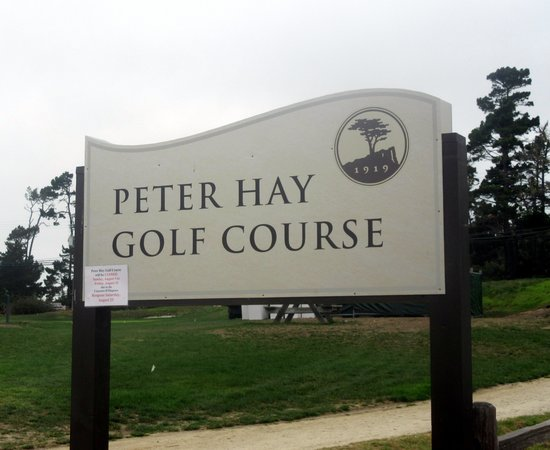

In the early part of the 20th century, Samuel F.B. Morse is challenged with making the Pebble Beach area an attractive real estate investment in order to find a buyer. He decides to create a one-of-a-kind golf course with unsurpassed beauty and an element of difficulty that will always be challenging. Morse utilizes the extraordinary talent and vision of two great amateurs—Jack Neville and Douglas Grant—to design the course, and Pebble Beach Golf Links officially opens on February 22, 1919. Pebble Beach Golf Links is the number 1 rated public course in the country. Pebble Beach was designed by Jack Neville & Douglas Grant and features 18 holes with a par of 72, a rating of 74.7, and a total yardage of 6,828.
Robert Trent Jones, Sr. designed Spyglass Hill Golf Course after NCGA Executive Director Bob Hanna proposed a deal with S.F.B. Morse, founder of Pebble Beach Company, and chairman of the board of Del Monte Properties. The NCGA would fund the building of the course if the Company would put up the land and reserve 30 days a year for NCGA tournaments. Morse had always envisioned a string of golf courses around Del Monte Forest’s shoreline and he agreed. Jones designed the course, with assistance from his son, Robert Trent Jones, Jr., between Cypress Point and Monterey Peninsula Country Club—and among sand dunes and pine forest. Today, the Joneses are renowned the world over for creating some of the best courses on Earth, including the masterpiece that is Spyglass Hill.
Spyglass Hill features 18 holes with a par of 72, a rating of 75.5, and a yardage of 6.960.
Situated on acreage that was once occupied by a sand-mining operation, The Links at Spanish Bay was built on vast sandy wasteland ideally suited for creating a true links-style course. In the early 1980s, Robert Trent Jones, Jr. was called on for a design for Spanish Bay. Tom Watson and Sandy Tatum, both fans of British links golf, were called in to work with him on the project. With a rough course designed, planners began laying out the development that would include The Inn at Spanish Bay. By 1985, the plans received the last of the necessary approvals and the company broke ground on the new project. The Links at Spanish Bay was planned to protect the native dunes habitat and recreate dune forms throughout the areas surrounding the course. The dunes areas would be used to restore native plant communities in one of the most extensive programs ever designed to blend public access, recreation and environmental habitat restoration. To facilitate the propagation of native plants, a nursery was established. In the early seasons, additional nurseries were used to allow for the planting of more 100,000 native species each year. Spanish Bay features 18 holes with a par of 72, a rating of 74, and a yardage of 6,821.
Del Monte is a landmark course that has played an instrumental role in popularizing golf out West since its inception in 1897. The birthplace of the California State Amateur and the oldest course in continuous operation west of the Mississippi retains much of that classic charm today, challenging the game’s best golfers with its small, sloping, old-school greens. The venerable layout brings out of bounds into play on more than half its holes, and puts a premium on placing the ball below the hole with well-bunkered greens that are often pitched strongly from back-to-front. Originally designed as a nine-hole course in 1897 by Charles E. Maud and expanded to 18 holes in 1902, Del Monte promptly attracted the game’s best players. The course’s Del Monte Championship was so highly regarded that many considered the champion to be the best golfer in the state. When the California State Amateur was founded in 1912, Del Monte was the natural choice to host it. Del Monte was also selected to host the 1916 Western Amateur, marking the first time one of the era’s biggest national amateur events was played west of Colorado. Del Monte features 18 holes with a par of 72, a rating of 71.6, and a yardage of 6,365.
Peter Hay and Samuel F. B. Morse were interested in the concept of a 9-hole course where golfers could work on their short game or squeeze a short round into a busy day. There was a parcel of available hillside between the Pebble Beach Golf Links and the Pebble Beach Equestrian Center with barely enough space—less than 10 acres. The course opened in October 1957 and immediately proved popular, especially with young players and special events and fundraisers. Over the years, Peter Hay Golf Course has been used for everything from warming up to introducing children to the game, as well as hosting the professional and celebrity shoot-outs preceding the AT&T Pebble Beach Pro-Am. For over four decades, the Peter Hay Golf Tournament for boys and girls is also played on this course. Peter Hay was designed by Peter Hay, Jack Neville, and General Robert McClure which features 9 holes with a par of 27.
Standing at the top of Peter Hay Golf Course is the 30,000-pound bronze sculpture, “Momentum,” by artist Richard MacDonald. The sculpture was created in 2000 in celebration of the 100th playing of the U.S. Open golf championship at Pebble Beach, which was won by Tiger Woods. The image represents the anatomy of the golf swing and the dawn of the new millennium as it encircles centuries of excellence past, present and future.
Craeted by Bryce Bradshaw
Contributors: Bo Zhao
Information Provided by Pebble Beach Golf
Basemaps Provided by Leaflet-Providers